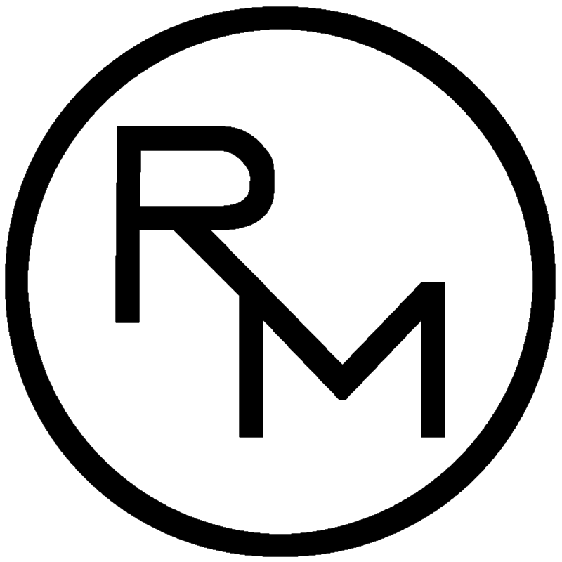
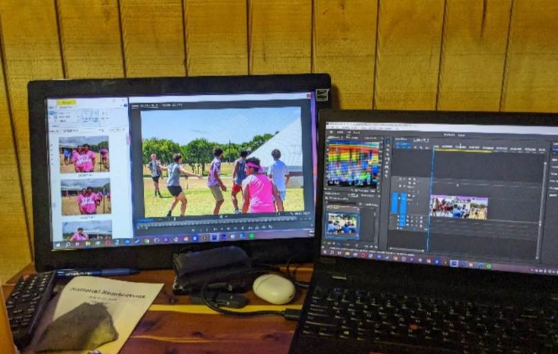

This video is one of my all-time favorite projects that I've worked on. It started as a hobbyist project. I was working at North Central church as a part of an internship at the time, and as part of that, I had been previously tasked to create a short highlight of the church's 2023 Youth Camp. I really enjoyed making that short reel with the footage I had available, but I knew that next year I wanted to strive to do more. Now, with the 2024 camp coming up, knowing I would be attending, I made sure to come prepared. I packed my Canon T1i and Sony DSC-H200 cameras as well as my ThinkPad P15s, all incredibly budget gear.
I find that the limitations of my equipment were actually my favorite part of creating this project. It shows my ability to adapt and problem-solve. Shooting was very straightforward; neither camera boasts very high recording specs, so I chose to focus more on the composition and framing of my shots. During post-production, I encountered most of my limitations. I had a two-week trip in Missouri directly after the camp, where I did not have a stable internet connection. Because of this, I had to figure out solutions to any problems that came up with only the knowledge I had already obtained in Premiere Pro by this point. This turned out to be a really great exercise, and it helped a lot with my creativity. For the music tracks in this video, I had to resort to walking up a hill to the highest point in the campground I was staying at just to get enough of a connection to download them. That was the only point up to the finalization of the project, where anything besides what was in the program. This video also took a LONG time. My setup was extremely limited; I was using an old TV from a friend's RV as a preview monitor, my laptop, which had an NVIDIA Quadro P600 as its GPU, and, because of this, I also opted to use the 2022 version of Adobe Premiere for stability. The limitations of my hardware forced me to render a lot, but in the end, I believe my patience truly paid off.
The North Texas chapter of AG, which ran the camp the NC church attended that year, created its own video for the camp, but I was really glad I created this project because I was able to capture all of the work our group and team put into the camp, as well as highlight more of our own smiling faces. Since the camp, I've been honored to have had NC Youth show my video at many of their services as a promo piece, and I'm really thankful to have had this experience to hone my craft.

Editing Setup — Youth Camp Video
This is a mockup promotional video I made for my lighting class; all color work came straight out of the camera, no post-processing was applied.
This was a short recap video I was tasked with shooting and editing by North Central Church for the Inspire event they hosted for Carl Wunsche Sr. High School.
This is an event recap video directed and produced by Kamran Malik for Lone Star College Kingwood. I served as a shooter for some of the highlight footage in the project's intro.
This was a testimonial video I shot, edited, and produced for Wellspring Midwifery Care & Birth Center.
This was a clip I edited from a podcast recording I coordinated and recorded for North Central Church.
This was a video I was hired onto as editor for The Logan Joy Show.